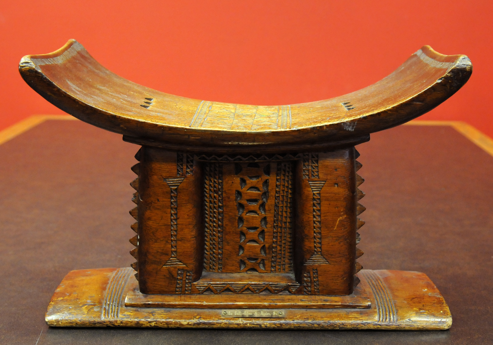

Ghana has a rich history that dates back to ancient times. The region that is now Ghana was inhabited by various ethnic groups, including the Akan, Ashanti, Fante, and Ewe. These groups had their own cultures, languages, and traditions, and engaged in trade and agriculture.
The Akan people, for example, were known for their gold mining and trading, and developed a complex system of government and religion. They believed that their leaders were descended from the gods, and that